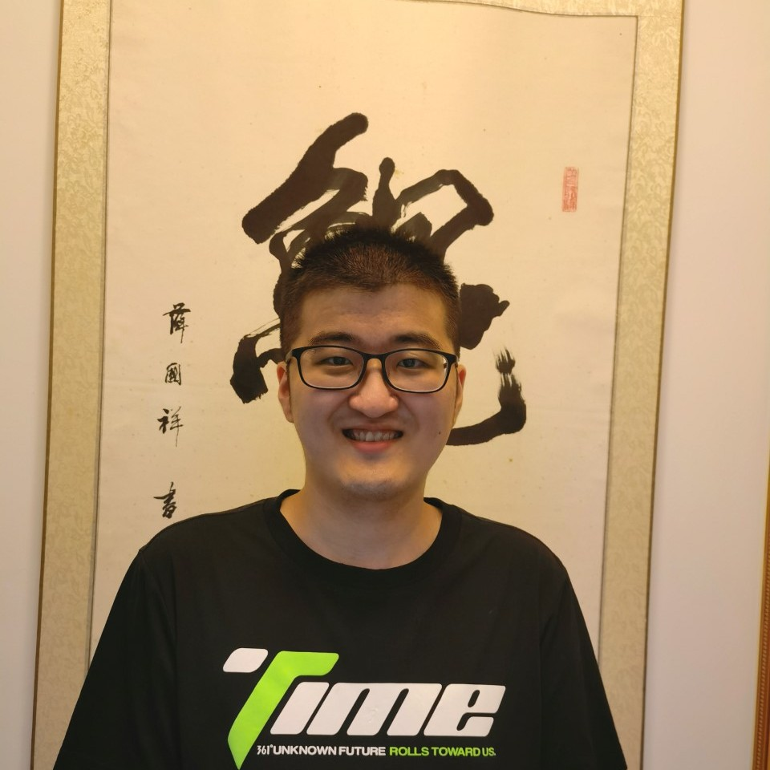

Pricipla Investigator

Qi Dou
Assistant Professor
Department of Computer Science and Engineering (co-affiliated with) T Stone Robotics Institute
The Chinese University of Hong Kong (CUHK)
Office: Rm 1014, Ho Sin-Hang Engineering Building, CUHK, Shatin, HK
Department of Computer Science and Engineering (co-affiliated with) T Stone Robotics Institute
The Chinese University of Hong Kong (CUHK)
Office: Rm 1014, Ho Sin-Hang Engineering Building, CUHK, Shatin, HK
Email:


Current Members


Yonghao Long
Ph.D. student (2020 - )
B.E. SCUT
B.E. SCUT
Wenao Ma
Ph.D. student (2020 - )
B.E. XMU - M.S. XMU
(co-advise with Prof. Tiffany So)
B.E. XMU - M.S. XMU
(co-advise with Prof. Tiffany So)


Zhao Wang
Ph.D. student (2021 - )
B.E. ZJU
B.E. ZJU

Shizhan Gong
Ph.D. student (2022 - )
B.E. Tsinghua - M.Sc. NYU
B.E. Tsinghua - M.Sc. NYU


Hongzheng Yang
Ph.D. student (2022 - )
B.E. Beihang
B.E. Beihang

Yuan Zhong</a>
Ph.D. student (2022 - )
B.E. WHU
B.E. WHU

Yueyao Chen
Ph.D. student (2023 - )
B.E. NEU - M.Sc. CUHK
B.E. NEU - M.Sc. CUHK
Zheng Han</a>
Ph.D. student (2023 - )
B.E. XDU - M.S. XDU
B.E. XDU - M.S. XDU
Yiyao Ma</a>
Ph.D. student (2023 - )
B.E. Beihang
B.E. Beihang

Dr. Jianfeng Cao
Post-doc fellow
Ph.D. HKCityU (2021)
Ph.D. HKCityU (2021)

Dr. Bingchen Gong
Post-doc fellow
Ph.D. HKU (2021)
Ph.D. HKU (2021)
Manxi Lin
Exchange Ph.D. Student
B.E. HUST - M.S. DTU - Ph.D. DTU
B.E. HUST - M.S. DTU - Ph.D. DTU

Yongtao Zhang
Exchange Ph.D. Student
Ph.D. SZU
Ph.D. SZU

Wang Wei
Research assistant
B.E. CUHK
B.E. CUHK

Yuqi Gong
Research associate
B.E. FNU - M.Sc. CUHK
B.E. FNU - M.Sc. CUHK

Yuqi Tong
Research assistant
B.E. Tongji Univ.
B.E. Tongji Univ.

Jianxun Yu
Research assistant
B.E. UJN - M.S. PolyU
B.E. UJN - M.S. PolyU

Anjie Le
Research assistant
B.A. Cambridge
B.A. Cambridge

Anran Lin
Research assistant
B.E. SCUT - M.S. CUHKSZ
B.E. SCUT - M.S. CUHKSZ

Jiawei Fu
Research assistant
B.E. NWPU - M.S. XJTU
B.E. NWPU - M.S. XJTU

Qixin Hu
Research assistant
B.S. HUST - M.S. HUST
B.S. HUST - M.S. HUST

Kejian Shi
Research assistant
B.E. UCL - M.S. ICL
B.E. UCL - M.S. ICL
Qiyao Xue
Research assistant
B.E. PolyU
B.E. PolyU
Openings (all year round)
Postdoctoral Fellow / Research Associate
Multiple positions are open to apply for being involved in projects on machine learning for medical image analysis.
Specific responsibilities and requirements are as follows:
- Coordinate a multidisciplinary team of engineering researchers and clinical collaborators for the development of smart medical image diagnosis, detection, segmentation, prognosis, and clinical decision-making systems.
- Develop cutting-edge ML methods in terms of model generalizability, robustness, interpretability, and human-in-the-loop test-time mechanisms for smart healthcare systems.
- Generate high-quality papers to be published in top-tier conferences and high-impact journals.
- Require a Ph.D. with a good publication record in medical imaging, computer vision, AI/ML, statistics, or other related fields.
- Experience in multi-modal learning, image segmentation, causality, and/or data-efficient learning are preferred.
- Experience in processing medical endoscopy/MRI/CT/Ultrasound images is preferred.
- Employment contract can be flexible and up to 3 years.
Two positions are open to apply for being involved in a project on robotic surgery intelligence.
Specific responsibilities and requirements are as follows:
- Work together with experts of computer scientists, surgeons, roboticists to develop a novel AI+XR system to change the way of robotic surgery education, in terms of how novices perceive, visualize and interact with surgical robots during training.
- Develop image-based robotic surgery perception, stereo reconstruction, reinforcement learning and planning techniques, and integrate them into visualization HMD, haptic devices and/or robotic platforms for evaluation and demos.
- Generate high-quality papers to be published in top-tier conferences and high-impact journals.
- Require a Ph.D. with a good publication record in medical imaging, computer graphics, human-computer interaction, surgical robotics, or other related fields.
- Experience in augmented reality, virtual reality, simulation, visualization system integration and development are preferred.
- Experience working with Unity, Bullet, SOFA, Omniverse, OpenGL, TCP, UDP Socket and other relevant tools are preferred.
- Employment contract can be flexible and up to 3 years.
Two positions are open to apply for being involved in a project on robotic vision and learning-based automation.
Specific responsibilities and requirements are as follows:
- Work together with local and international experts of computer scientists and roboticists to explore learning-based robotic perception and automation for applications including but not limited to surgical robots.
- Explore solutions for defined novel research problems and create cool demos.
- Generate high-quality papers to be published in top-tier conferences and high-impact journals.
- Require a Ph.D. with a good publication record in robotic vision and learning, mechanical and automation engineering, or other related fields.
- Experience in RL, imitation learning, sim2real transfer, 6D pose estimation, path planning are preferred.
- Employment contract can be flexible and up to 3 years.
Research Assistant
Multiple RA positions are available for all the above projects.
Specific responsibilities and requirements are as follows:
- Work together with senior team members on research and development projects on AI for medical imaging and robotics.
- Collect and process relevant data, deploy AI algorithms for inference, integrate systems for testing and demo.
- Generate high-quality papers to be published in top-tier conferences and high-impact journals.
- Require excellent communication skills and proficient in at least one programming language.
- Employment contract can be flexible and up to 2 years.
Alumnus
PhD students:
Interns and RAs:
(alphabetical order)